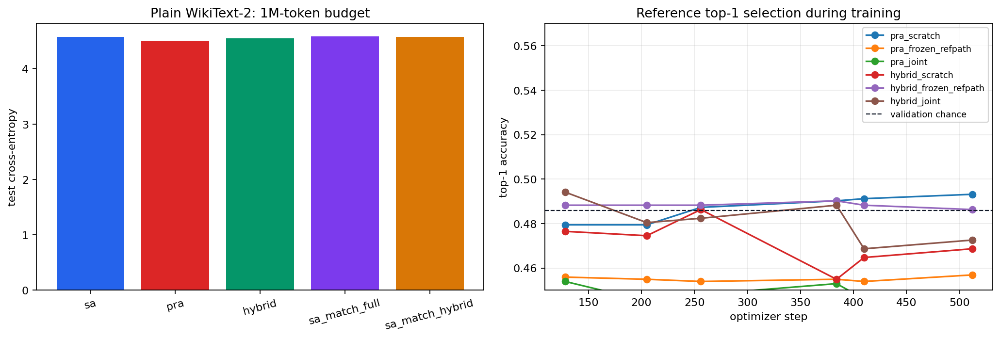

Five paired model seeds, fixed WikiText-2 reference dataset and split, matched training budgets. Uncertainty is available in the aggregate reports.
No or not yet. frozen pretrained final top-1=0.4101; scratch=0.4221; candidate-count chance=0.4202; periodic curves show no sustained rise
Yes. direct joint valid loss=4.9129; scratch=6.3557
Yes. frozen plain-loss delta=+0.0000; direct joint=+0.1775
Yes. direct joint valid loss=4.9196; scratch=6.3642
Yes. frozen plain-loss delta=+0.0000; direct joint=+0.1562
No or not yet. hybrid scratch-to-staged gain=1.6346; full PRA gain=1.6837
Yes. mean test loss fell from 4.7457 at 524,288 tokens to 4.5034 at 1,048,576 tokens
No or not yet. full PRA=4.5034 vs matched SA=4.5855; hybrid=4.5500 vs matched SA=4.5715
No or not yet. direct joint valid loss=4.9129; frozen=4.6720; forgetting must be considered separately
No or not yet. direct joint valid loss=4.9196; frozen=4.7296; forgetting must be considered separately
| Architecture | Parameters | Test Loss | Test Perplexity | Training Budget Tokens | Active Train Seconds | Host Interruption Seconds |
|---|---|---|---|---|---|---|
| sa | 4216320 | 4.57036 | 96.58210 | 1048576.00000 | 193.89768 | 0.00000 |
| pra | 4479488 | 4.50342 | 90.33721 | 1048576.00000 | 186.35873 | 0.20225 |
| hybrid | 4347904 | 4.55001 | 94.63921 | 1048576.00000 | 192.92349 | 0.00000 |
| sa_match_full | 4478976 | 4.58547 | 98.10867 | 1048576.00000 | 169.73058 | 0.72547 |
| sa_match_hybrid | 4347648 | 4.57148 | 96.69036 | 1048576.00000 | 185.37187 | 0.00000 |
| Architecture | Mode | Valid Loss | Disabled Loss | Shuffled Loss | Irrelevant Loss | Oracle Loss | Initial Top1 | Final Top1 | Plain After | Forgetting Delta |
|---|---|---|---|---|---|---|---|---|---|---|
| sa | scratch | 6.34595 | 6.34595 | 6.34595 | 6.34595 | 6.34595 | 0.00000 | 0.00000 | 6.47871 | 1.90835 |
| sa | joint | 4.92301 | 4.92301 | 4.92301 | 4.92301 | 4.92301 | 0.00000 | 0.00000 | 4.71248 | 0.14212 |
| pra | scratch | 6.35572 | 6.37542 | 6.35713 | 6.35602 | 6.35549 | 0.49412 | 0.42115 | 6.49476 | 1.99135 |
| pra | frozen_refpath | 4.67205 | 4.68953 | 4.67686 | 4.67229 | 4.67021 | 0.45882 | 0.42212 | 4.50342 | 0.00000 |
| pra | joint | 4.91286 | 4.89376 | 4.91557 | 4.91340 | 4.91275 | 0.45882 | 0.42692 | 4.68090 | 0.17748 |
| hybrid | scratch | 6.36423 | 6.38464 | 6.36490 | 6.36474 | 6.36410 | 0.50784 | 0.42308 | 6.51399 | 1.96398 |
| hybrid | frozen_refpath | 4.72964 | 4.74131 | 4.73042 | 4.73038 | 4.72791 | 0.48824 | 0.39808 | 4.55001 | 0.00000 |
| hybrid | joint | 4.91957 | 4.91249 | 4.92212 | 4.92107 | 4.91935 | 0.48824 | 0.40769 | 4.70616 | 0.15616 |
